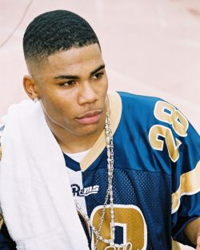

ME AND MY FRIENDS
MY FREINDS MEAN ALOT TO ME BUT NOT AS MUCH AS MUCH AS MY FAMILY. ALL MY FRIENDS WENT TO THE SAME MIDDLE SCHOOL WITH ME. THEY ARE MAD NICE AND THEY ALWAYS GOT YOUR BACK NO MATTER WHAT.LIKE ONE TIME I WAS SUPPOSE TO GET JUMPED MY FREINDS WHERE THERE FOR ME. THEY SAID THAT THEY WOULDNT LET ME GET JUMPED. BUT HERE ARE ALL MY CLOSE FRIENDS. TIONDRA, KARLY, ASCENDENCE, LATOYA, JUDY,AND ROSALIA. AND THEM ARE ALL MY CLOSE FREINDS. I HAVE OTHER FRIENDS BUT THERE NOTHING LIKE THEM. AND DURING THE SUMMER I WENT TO THIS PROGRAM CALLED THE ARTEMIS PROJECT AND I MADE SOME NEW FRINEDS THERE. THEY ARE WILLYNN, SARAH, MILA, NANCY AND I MADE MORE BUT I DONT WANT TO NAME THEM. WELL WHEN I GO TO HIGH SCHOOL I HOPE THAT ALL MY FRIENDS AND I WILL KEEP IN TOUCH. ANDE IF WE DONT ONE DAY WE WILL RUN IN TO EACH OTHER.AND THE NEW FRIENDS RTHATY I MADE IN THE ARTEMIS I HOPE THAT THEY WILL NEVER FORGET ME.